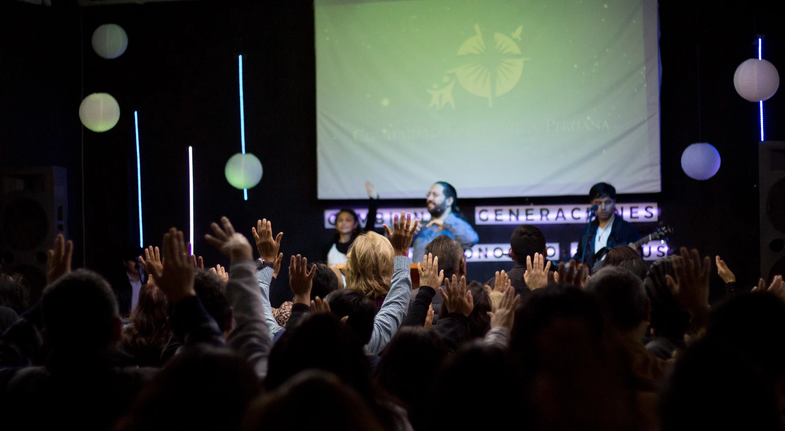

Hernán Paredes
Honramos la memoria de nuestro pastor fundador y compartimos sus enseñanzas para seguir aprendiendo de la Palabra.
Recordamos nuestros inicios y las enseñanzas que siguen acompañando a nuestra comunidad.
Conoce sus enseñanzas
Hernán y María Elena Paredes son los pastores fundadores de nuestra comunidad. Su historia forma parte del camino de fe que hoy continuamos como ALTAR.
Honramos la memoria de nuestro pastor fundador y compartimos sus enseñanzas para seguir aprendiendo de la Palabra.
Pastora fundadora de nuestra comunidad, junto a Hernán Paredes. Pronto compartiremos más de su historia.
Conoce a quienes pastorean nuestra comunidad en esta etapa.
Conoce a nuestros pastores